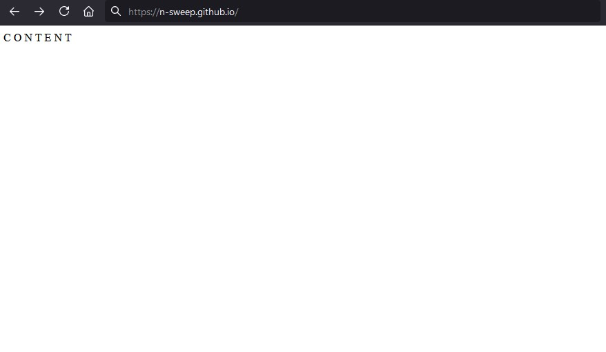
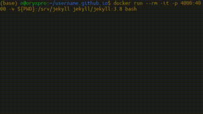
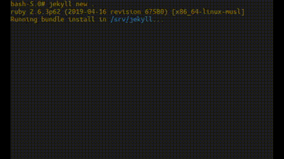
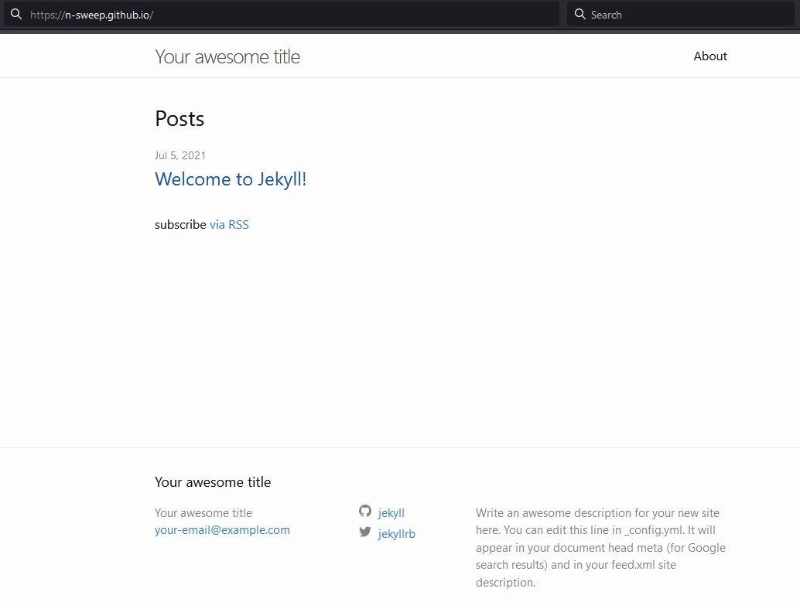

Contents:
I Think Docker is Rad 🐳
I was always hesitant to learn Docker. It seemed really complex and, as a hobbyist programmer, unnecessary. Turns out it isn’t either of those things and also, it rules. Ever since I started studying data science, I use it regularly and I really enjoy the benefits of containerization.
Recently I learned how to use a Dockerfile to build custom Docker images and, after building an image based on Alpine Linux to run neovim and zsh for a consistent, portable text editor and python environment (I’ll write about that soon), I wanted to document the process for my future self. Coincidentally, I had also recently read how easy it was to host a website with GitHubPages and only needed an excuse to learn how. It’s all coming together.
We’re going to go through the process of hosting a blog on GitHub Pages, making posts, and building its structure and theme using Jekyll (whatever that is) with a little help from - you guessed it - Docker.
Hosting with Github Pages
Note: I completed these steps on a
Pop!_OS 21.04machine.
First, Some Prerequisites
We will need Git and Docker installed. Later, we’re going to use Docker to pull down a Jekyll image so we don’t have to install Jekyll and all its dependencies. If you have trouble with these commands, check these installation links for Git & Docker.
# Update
sudo apt-get update
# Install Git
sudo apt-get install git-all
# Install Docker
sudo apt-get install docker-ce docker-ce-cli containerd.ioCreate A New GitHub Repository
If you don’t know how, just visit the link above. Your repo should be named with your github username in the format username.github.io for GitHub to host it correctly.
Clone the Repo and Add Some Content!
Next, move to the directory where you would like to store your site’s files and clone the repo to your local machine. Navigate into the repo directory and create an index markdown file, which will serve as your site’s home page, and finally push your changes back up to GitHub:
# Clone Repo
git clone https://github.com/username/username.github.io.git
# Navigate into project folder
cd username.github.io
# Create index.md and add some C O N T E N T
echo "C O N T E N T" > index.md
# Push changes
git add --all
git commit -m "initial commit"
git push -u origin mainAnd You’re finished!
Well done. Grab a cold beverage, pat yourself on the back, and visit https://username.github.io in a browser to view your handiwork.

… Looks Kinda Boring Though, Doesn’t It?
Sure does. Why don’t we take GitHub’s advice and use Jekyll, whatever that is.
Adding Some Spice with a Jekyll Theme
From the GitHub docs:
Jekyll is a static site generator with built-in support for GitHub Pages and a simplified build process. Jekyll takes Markdown and HTML files and creates a complete static website based on your choice of layouts…
I’m not familiar with Jekyll in the slightest, but I am familiar with Docker, and a quick trip to Docker Hub yields an official Jekyll Docker image! Now we can pull down the image and use Jekyll without installing it locally. Radical.
Pull Down the Jekyll Docker Image
If you try to call docker run on an image you don’t have locally, Docker will attempt to retrieve the image from Docker Hub if it exists. We’ll run the Jekyll version 3.8 image (I had a weird permissions problem with the latest build), pull it down from the hub, and open up a bash shell inside of it.
# You're probably still there but if not, navigate to the repo directory
cd /path/to/username.github.io
# Pull down and open a shell in the Jekyll image
docker run --rm -it -p 4000:4000 -v ${PWD}:/srv/jekyll jekyll/jekyll:3.8 bashThis may take a minute.

While you wait for the Jekyll image to download, let’s talk about what this command is doing.
From the docs: > The docker run command first creates a writeable container layer over the specified image, and then starts it using the specified command.
Simple enough. Here’s what the rest of it does:
docker run --rm -it- create a container that will be removed (
--rm) when we’re finished with it and enble an interactive terminal connection (-it)*
- create a container that will be removed (
-p 4000:4000- publish (or expose) port 4000 on the local machine to the same port inside the container (this is the port Jekyll uses to serve locally)
- these ports do not have to match, eg.
-p 9999:80could be a valid mapping - local port is always first:
local_port:container_port
-v ${PWD}:/srv/jekyll- mount the directory we’re currently in (
${PWD}) to the directory that Jekyll uses to build the site inside the container (/srv/jekyll) - again, local is always first:
local_dir:container_dir
- mount the directory we’re currently in (
jekyll/jekyll:3.8 bash- specify that we want the official
jekyll/jekyllimage, version3.8 - start the container and open an interactive
bashshell
- specify that we want the official
You can find more information about the docker run flags in the documentation
* You can find a great explaination of the -it flags at this StackOverflow answer
Important Note!
In a moment, we will use Jekyll to build the structure and theme for our site.
By mapping our site’s local git repository to/srv/jekyllin the container, we allow Jekyll to save all the site files it generates locally in our repo. These files are all GitHub needs to build our site at https://username.github.io.
This allows us to ditch our Docker container (and even the image) when we’re finished, freeing up the space taken up by Jekyll and its dependencies and leaving behind the site files for us to push to GitHub for hosting.
Build and Preview Your Site
A nice feature of Jekyll is that it can serve your site locally, so you can check that you’re happy with your edits before pushing them up to your repo. So now that we’re in the shell inside our container, we’ll use Jekyll to create a new site, then serve it and take a look in the browser.
# Instantiate new site
jekyll new .
# Serve the site locally
jekyll serveThis may take some time as well.

Great, now we can visit http://localhost:4000 and see that we have the basic Jekyll theme applied to our page on our own machine before pushing the repo back to GitHub. Neat! 📷

Editing Fields
You’ll probably notice that your website is populated with filler text like Your Awesome Title and your-email@example.com. These values can be changed in the _config.yml file, which was generated when we called jekyll new . earlier. Different themes can have different configurations, but the basics are pretty self explanitory. Here’s an exceprt from the auto-generated config file:
# Excerpt from default _config.yaml
# ...
title: Your awesome title
email: your-email@example.com
description: >- # this means to ignore newlines until "baseurl:"
Write an awesome description for your new site here. You can edit this
line in _config.yml. It will appear in your document head meta (for
Google search results) and in your feed.xml site description.
baseurl: "" # the subpath of your site, e.g. /blog
url: "" # the base hostname & protocol for your site, e.g. http://example.com
twitter_username: jekyllrb
github_username: jekyll
# Build settings
markdown: kramdown
theme: minima
plugins:
- jekyll-feed
# ...What to change:
- Change the
title, thedescription, and youremail- express yourself, be compelling and mesmerizing, a tour de force
- Change
urland maybebaseurlurlis the url of your site:https://username.github.io- if your site files are in a subdirectory inside of your repo,
baseurlshould be equal to the path to your files, otherwise leave blank
- If you choose a custom theme, you may need to change
theme- some themes come with their own
_config.ymlfiles
- some themes come with their own
- Change custom variables
- different themes have different settings
- the default theme has
twitter_usernameandgithub_username - check your theme’s GitHub/documentation for instructions
Find A Custom Theme!
That’s better but you’ve gotta admit, the default theme is still pretty boring. So now it’s time to choose your own!
There are a lot to choose from, and the Jekyll documenatation has a good list of resources for themes. I ended up at jekyllthemes.org and found Monophase. Not much more exciting than the Jekyll default we just saw, but I was going for minimal.
Maybe Neumorphism is more your style?
Or Windows 95?

Installation
Note: It probably goes without saying, but always be aware of the licensing associated with others’ code you plan to download and use. Most free Jekyll themes only require attribution and already have it built into the footer of the theme.
It also absolutely goes without saying, but remember McGruff the Crime Dog says “always be mindful of any code you download from anywhere”. This is (obviously) not a security blog!
If you navigate to their GitHub repos, many of the themes at the links above have their own instructions for installation but for themes that don’t, it’s as easy as forking and pulling the repo and tweaking as needed.
# First, fork the repo (see the link above)
# Then clone locally
git clone https://github.com/username/windows-95Themes will have pages such as index, about, archive, etc… that can be edited to your liking.
We’ll leave further tweaking of style and layout as an exercise to the reader (because, to be honest, it’s an exercise for me also). Your theme of choice’s GitHub is usually a good place to start. There’s also google.
Make A Post!
The time has come. This is what you’ve been training for. Unless of course you’ve chosen a different theme layout such as a landing page, CV, or gallery and this section is irrelevant to you.
Anyway, after completing the previous steps we should have a _posts/ directory in our repo and, as luck would have it, we’re gonna keep our posts in there. Even if you haven’t downloaded a custom theme, the standard Jekyll theme created when we called jekyll new . should include a sample post in this directory. The sample includes includes instructions on creating your own posts. Make a copy and use it as a template!
As you edit your new post, use your locally hosted site at http://localhost:4000 to check your work.
Once you’ve finished your post, push it back up to GitHub. This should look familiar from way back when we hosted our very first iteration:
# Push changes
git add --all # See note above
git commit -m "publishing a post!"
git push -u origin mainNote: as your repo gets more complex, you don’t always want to
git add --all. Read here about using.gitignoreorgit addfiles individually.
Done for Real!
Finally, head back over to https://username.github.io, andwould you look at that! Your opinion on the internet! Outstanding!
Epilogue: Removing the Docker Image
Now that you’ve hosted and edited your site, chosen your theme, created a blog post and pushed it all back up to GitHub, you may want to remove the Jekyll Docker image from your machine. You can always pull it back down and use it again as needed with the docker run command we used to create our container initially.
If your Jekyll server is still running:
Press Ctrl+C on your keyboard to stop the server and type exit to close the Docker container.
# ...
# Auto-regeneration: enabled for '/srv/jekyll'
# Server address: http://0.0.0.0:4000/
# Server running... press ctrl-c to stop
<Ctrl + C>
# Type 'exit' to close the docker container
exitRemove the Docker Image:
Look at your Docker images and remove the Jekyll image.
# List your docker images
docker images
# REPOSITORY TAG IMAGE ID CREATED SIZE
# alpine 3 d4ff818577bc 3 weeks ago 5.6MB
# ubuntu latest 26b77e58432b 3 months ago 72.9MB
# jupyter/tensorflow-notebook latest 804645d9e7e7 4 months ago 3.75GB
# jupyter/pyspark-notebook latest 3eba429b2f1f 4 months ago 3.55GB
# mongo latest ca8e14b1fda6 5 months ago 493MB
# jekyll/jekyll 3.8 f68afd75b4c4 22 months ago 457MB
# Remove the image
# REPOSITORY: jekyll/jekyll
# TAG: 3.8
# ID: f68afd75b4c4
# Either are valid:
# docker image rm f68afd75b4c4
docker image rm jekyll/jekyll:3.8And congratulations Hyde, you’ve done it!
Until next time
Welcome to the end. Thanks for reading.